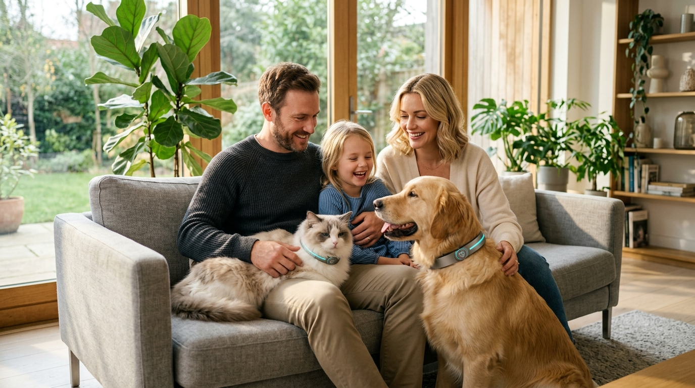

«Thor explorando Collserola con geovallas activas y telemetría en tiempo real. 8.4 km sin estrés.»
1.480 likes
Ver en Instagram

Confían en nosotros y hablan de CUDI
Todo el ecosistema de bienestar, telemetría y salud animal sincronizado en un solo lugar. 15 soluciones certificadas por categoría.

Observamos el nivel de actividad y la calidad del descanso de perros y gatos mediante sensores biométricos avanzados. Si detectamos variaciones inusuales en su comportamiento diario, el sistema emite una alerta preventiva inmediata para garantizar su tranquilidad.

Ante cualquier imprevisto clínico, CUDI comparte automáticamente el historial médico actualizado de tus compañeros animales con nuestra red de centros validados. Una respuesta rápida y precisa que salva vidas en momentos críticos.

Potenciamos la socialización sana de perros y gatos en entornos controlados mediante geolocalización satelital. Conectamos a tu compañero con otros animales compatibles para fomentar un desarrollo emocional pleno y seguro.
Cientos de familias, veterinarios colegiados y profesionales en toda España protegen y optimizan la salud de sus perros y gatos con la tecnología predictiva de CUDI.

"Antes no me atrevía a quitarle la correa a Max en Collserola por si salía corriendo persiguiendo un rastro. Con el Smart Collar en Live Tracking y la app CUDI puedo ver su punto exacto cada segundo. Ganamos la suscripción premium del mes gratis por subirlo a TikTok."

"Recomiendo CUDI a mis pacientes con patologías cardiovasculares o animales senior. En dos ocasiones los datos de taquicardia temprana y subida térmica evitaron shocks térmicos graves antes de que el dueño notara síntomas visibles."

"Hicimos el recorrido sugerido por la montaña, subí la foto a mi perfil a mediodía mostrando el collar a prueba de agua (¡porque se tiró al charco!), y a las pocas horas mi cuenta CUDI tenía su mes Premium acreditado. Brutal nivel de confianza y comunidad."

"Thor es un escapista nato. Saltó una cerca persiguiendo corzos en el bosque. En cuanto sonó la alerta de geovalla abrí la brújula en tiempo real y di exactamente con él detrás de una loma. Solo por ese susto evitado el collar vale cada euro."

"Pensaba que estos collares eran pesados y solo para perros grandes. El collar es ultra liviano (32g) y a Kira no le molesta nada. Si sale del perímetro del chalet la app me envía notificación inmediata al smartwatch."

"En Sevilla el calor es implacable. En el mapa colaborativo encontramos senderos de ribera sombreados con puntos de agua validados por la comunidad. La IA de hidratación me recuerda cuándo ofrecerle agua según sus calorías gastadas."

"Competimos en Agility y entrenamos duro. Ver en tiempo real la variabilidad de su ritmo cardíaco y cómo recupera por la noche nos ha permitido planificar los descansos y evitar lesiones musculares. Es ciencia aplicada."

"Paseo manadas de hasta 6 perros. Los tutores reciben el link con la geolocalización satelital en directo y las pulsaciones de su compañero. La transparencia es total y me ha traído el triple de clientes recomendados."
"Antes no me atrevía a quitarle la correa a Max en Collserola por si salía corriendo persiguiendo un rastro. Con el Smart Collar en Live Tracking y la app CUDI puedo ver su punto exacto cada segundo. Ganamos la suscripción premium del mes gratis por subirlo a TikTok."
"Recomiendo CUDI a mis pacientes con patologías cardiovasculares o animales senior. En dos ocasiones los datos de taquicardia temprana y subida térmica evitaron shocks térmicos graves antes de que el dueño notara síntomas visibles."
"Hicimos el recorrido sugerido por la montaña, subí la foto a mi perfil a mediodía mostrando el collar a prueba de agua (¡porque se tiró al charco!), y a las pocas horas mi cuenta CUDI tenía su mes Premium acreditado. Brutal nivel de confianza y comunidad."
"Thor es un escapista nato. Saltó una cerca persiguiendo corzos en el bosque. En cuanto sonó la alerta de geovalla abrí la brújula en tiempo real y di exactamente con él detrás de una loma. Solo por ese susto evitado el collar vale cada euro."
"Pensaba que estos collares eran pesados y solo para perros grandes. El collar es ultra liviano (32g) y a Kira no le molesta nada. Si sale del perímetro del chalet la app me envía notificación inmediata al smartwatch."
"En Sevilla el calor es implacable. En el mapa colaborativo encontramos senderos de ribera sombreados con puntos de agua validados por la comunidad. La IA de hidratación me recuerda cuándo ofrecerle agua según sus calorías gastadas."
"Competimos en Agility y entrenamos duro. Ver en tiempo real la variabilidad de su ritmo cardíaco y cómo recupera por la noche nos ha permitido planificar los descansos y evitar lesiones musculares. Es ciencia aplicada."
"Paseo manadas de hasta 6 perros. Los tutores reciben el link con la geolocalización satelital en directo y las pulsaciones de su compañero. La transparencia es total y me ha traído el triple de clientes recomendados."

"Los braquicéfalos sufren mucho con el calor. El mes pasado a 29°C la app alertó: 'Temperatura corporal de Rocky en 39.4°C en ascenso'. Inmediatamente paramos, le humedecí las almohadillas y descansamos en sombra. CUDI salvó su vida."

"Tenía otros localizadores que había que cargar todas las noches. CUDI dura dos semanas completas con GPS activo inteligente. La carga magnética tarda menos de una hora y Simba no se queda desprotegido."

"Bimba es asustadiza y velocísima. La conexión satelital LTE-M no tiene zonas muertas en el campo. Saber que puedo activar el radar de proximidad por Bluetooth si entra en matorrales densos me quitó una angustia de años."

"La app lanzó un aviso: 'Oliver ha reducido su actividad nocturna un 40% y sus visitas al bebedero'. Lo llevé al veterinario y le diagnosticaron una cistitis incipiente que cogimos justo al principio. La medicina preventiva funciona."

"Hacemos raquetas en nieve cada invierno. El collar aguanta temperaturas bajo cero sin perder batería. Compartimos las fotos con #AventurasCUDI en Instagram y el sistema nos acreditó 3 meses gratis. La mejor comunidad pet-friendly."

"Maya aullaba cuando me iba a trabajar. El sensor acústico registró el momento exacto y la intensidad del estrés. Con las pautas de enriquecimiento ambiental que me sugirió el etólogo en la app, la ansiedad bajó un 85% en tres semanas."

"Nala va directa a cualquier río, poza de barro o playa. El sellado impermeable IP68 del collar no ha fallado ni un solo día tras un año de uso extremo. Lo lavo bajo el grifo y sigue impecable. Excelente calidad de materiales."

"Pasear por los acantilados de Cantabria requería una atención extrema. Con el mapa colaborativo encontramos caminos anchos vallados con fuentes. Además, tener las clínicas asociadas a 1 toque en la app da una tranquilidad inmensa."
"Los braquicéfalos sufren mucho con el calor. El mes pasado a 29°C la app alertó: 'Temperatura corporal de Rocky en 39.4°C en ascenso'. Inmediatamente paramos, le humedecí las almohadillas y descansamos en sombra. CUDI salvó su vida."
"Tenía otros localizadores que había que cargar todas las noches. CUDI dura dos semanas completas con GPS activo inteligente. La carga magnética tarda menos de una hora y Simba no se queda desprotegido."
"Bimba es asustadiza y velocísima. La conexión satelital LTE-M no tiene zonas muertas en el campo. Saber que puedo activar el radar de proximidad por Bluetooth si entra en matorrales densos me quitó una angustia de años."
"La app lanzó un aviso: 'Oliver ha reducido su actividad nocturna un 40% y sus visitas al bebedero'. Lo llevé al veterinario y le diagnosticaron una cistitis incipiente que cogimos justo al principio. La medicina preventiva funciona."
"Hacemos raquetas en nieve cada invierno. El collar aguanta temperaturas bajo cero sin perder batería. Compartimos las fotos con #AventurasCUDI en Instagram y el sistema nos acreditó 3 meses gratis. La mejor comunidad pet-friendly."
"Maya aullaba cuando me iba a trabajar. El sensor acústico registró el momento exacto y la intensidad del estrés. Con las pautas de enriquecimiento ambiental que me sugirió el etólogo en la app, la ansiedad bajó un 85% en tres semanas."
"Nala va directa a cualquier río, poza de barro o playa. El sellado impermeable IP68 del collar no ha fallado ni un solo día tras un año de uso extremo. Lo lavo bajo el grifo y sigue impecable. Excelente calidad de materiales."
"Pasear por los acantilados de Cantabria requería una atención extrema. Con el mapa colaborativo encontramos caminos anchos vallados con fuentes. Además, tener las clínicas asociadas a 1 toque en la app da una tranquilidad inmensa."
Nuestra inteligencia artificial analiza patrones de descanso y actividad. Si detecta una desviación inusual (como menos ganas de jugar o sueño inquieto), recibirás una notificación inmediata en tu móvil con consejos preventivos y la opción de triaje digital.
En caso de urgencia, CUDI activa un protocolo de auxilio instantáneo. El historial clínico digital se envía automáticamente a la clínica física más cercana de nuestra red certificada, para que el veterinario esté listo antes de que tú llegues.
Sí, el hardware ha sido diseñado para ser ligero, ergonómico y resistente para ambas especies. La suscripción permite gestionar de forma equitativa la salud de todos los miembros de la familia desde una única aplicación.
Puedes explorar nuestras opciones de cuidado integral (desde el plan gratuito hasta el Proactivo con hardware incluido) en nuestra página dedicada de Planes de Suscripción.
Nuestro equipo de atención al cliente está disponible para resolver cualquier duda. Puedes escribirnos a nuestro correo oficial cudi.ai2026@gmail.com o contactarnos a través de nuestras redes sociales oficiales.
Diseñamos nuestros planes pensando en tu tranquilidad y en su bienestar de perros y gatos. Empieza hoy mismo.
Perfecto para organizar la vida de tu mascota y descubrir nuestra red de confianza.
La experiencia definitiva de paz mental. Un asistente inteligente para tu compañero.
El bienestar de los compañeros animales depende de la atención constante a sus necesidades físicas y emocionales. Este portal ofrece información fundamentada para asegurar que cada perro y gato disfrute de una existencia larga, activa y libre de preocupaciones.
Documentamos cómo la geolocalización continua ha reducido las pérdidas definitivas en un alarmante porcentaje.
Leer Journal CompletoLa ventana de oro en traumas es de menos de una hora. La capacidad algorítmica de evaluar síntomas en tiempo real salva vidas.
Leer Journal CompletoLa biología celular exige un retorno estricto a dietas orgánicas formuladas específicamente. Previene fallas renales a mediano plazo.
Leer Journal CompletoLas rutinas de paseos grupales regulan el impacto del cortisol, mitigando la depresión y reactividad por aislamiento en entornos urbanos.
Leer Journal CompletoAnálisis estadístico sobre la prolongación de la esperanza de vida cruzado con la cobertura financiera total y preventiva.
Leer Journal CompletoRelevancia metodológica de recolectar el 100% de signos biométricos constantemente vs el tradicional chequeo anual sintomático.
Leer Journal CompletoHistorias clínicas reales, telemetría biométrica y el día a día de más de 12.000 familias y compañeros en Barcelona.